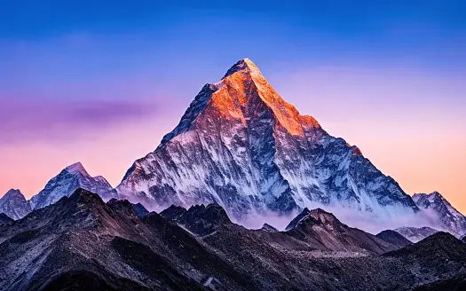

Sure, here's a description of a mountain: Nestled majestically in the heart of the rugged landscape, the mountain rises with an imposing presence, its peak often shrouded in wisps of mist or crowned with a blanket of pristine snow. Its slopes, weathered by time and the elements, bear the scars of ancient geological forces, forming craggy ridges and deep, verdant valleys.
At the foothills, dense forests cloak the terrain, their vibrant hues painting a striking contrast against the rocky slopes. The mountain's flanks are adorned with cascading waterfalls, their crystalline streams carving intricate patterns through the verdant foliage, providing sustenance to the diverse array of flora and fauna that call this region home.
As one ascends higher, the air grows thinner, and the landscape transforms into a rugged alpine realm. Jagged cliffs and precipitous ledges challenge the intrepid adventurer, offering breathtaking vistas that stretch as far as the eye can see. Towering above the world below, the summit beckons with an irresistible allure, promising unparalleled views and a sense of awe-inspiring achievement to those who dare to conquer its heights.
In every season, the mountain exudes a unique charm, from the vibrant colors of springtime blossoms to the icy grandeur of winter's embrace. It stands as a silent sentinel, a testament to the timeless beauty and raw power of nature, inspiring wonder and reverence in all who behold its majesty
A reflection in a mirror occurs when light bounces off a surface and returns to the eye or camera lens. Mirrors have smooth surfaces that reflect light in a predictable manner, preserving the angle of incidence (the angle at which the light strikes the mirror). This property allows mirrors to produce clear, accurate reflections of objects placed in front of them.
When you look at yourself in a mirror, you see a reflection of your appearance as if you were looking at yourself directly. However, the image is reversed horizontally; what's on your right appears on the left in the mirror, and vice versa. This reversal is due to the way light rays reflect off the mirror's surface.